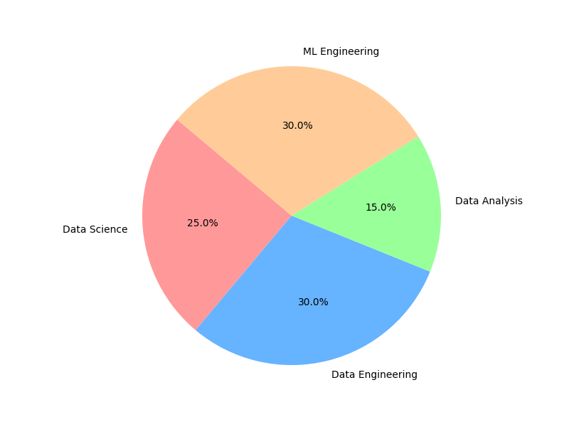

Bienvenue sur mon Portfolio
Explorez mes projets et découvrez mon parcours professionnel dans le domaine de la data science et du machine learning.
À Propos de Moi
Je suis un data scientist et un ingénieur en machine learning spécialisé dans le domaine de l'énergie et des mécanismes de marché avec une expertise sur les stacks AWS, Databricks et Power BI.
Mon expertise en tant que data person

Mes Projets
- Méthode des Panels: Création d'un moteur de calcul pour la prédiction de consommation.
- KPPVGeo: Développement d'un moteur de calcul pour la prédiction de production des producteurs photovoltaïques et éoliens.
- Valorisation des données NLP pour la consommation: Utilisation de données de réseaux sociaux et d'autres sources pour expliquer et prédire la consommation.
- Data Engineer: Conception d'une chaîne de traitement sur Databricks.
- Data Analytics: Création d'une visualisation de données pour une flotte de vélib.
- Data Science / ML Engineer:
- Segmentation de clientèle.
- Segmentation de territoire.
- Prédiction de logs d'une application.
- Développement d’un modèle de machine learning hybride pour la prédiction de la performance de pneumatiques sur Python.
- Développement d’un outil d’analyse de survie sur R.
- Développement d’une méthode de validation de simulations via des outils statistiques.
- Stage aux États-Unis, analyse de données de pression de pneumatique.
- Prédiction de la consommation électrique par les déplacements.
- Prédiction de problèmes fœtaux par un cardiotocographe.